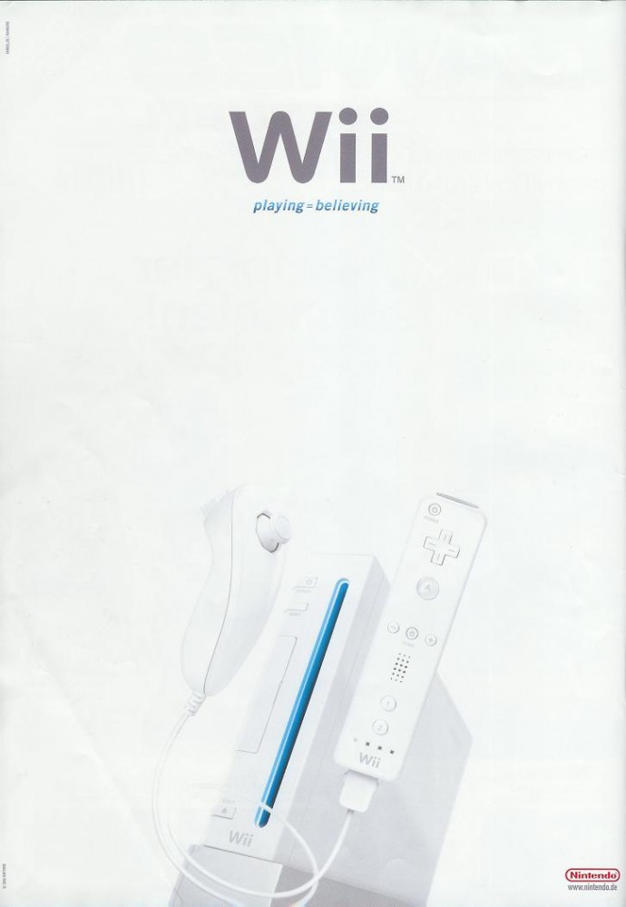
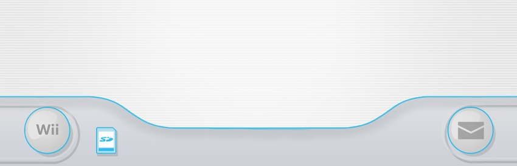

What is the Wii Menu?

The Wii Menu is the main interface for the Nintendo Wii console. It allows users to access different channels and features of the system.
The interface is designed to look like a grid of television channels, providing an intuitive way for players to navigate their games and applications.
The Disc Channel
The Disc Channel is always the first channel on the top left. This is where you launch the physical games inserted into the console disc drive.
Official Nintendo Wii Menu Info
Learn more about the Wii Menu History
